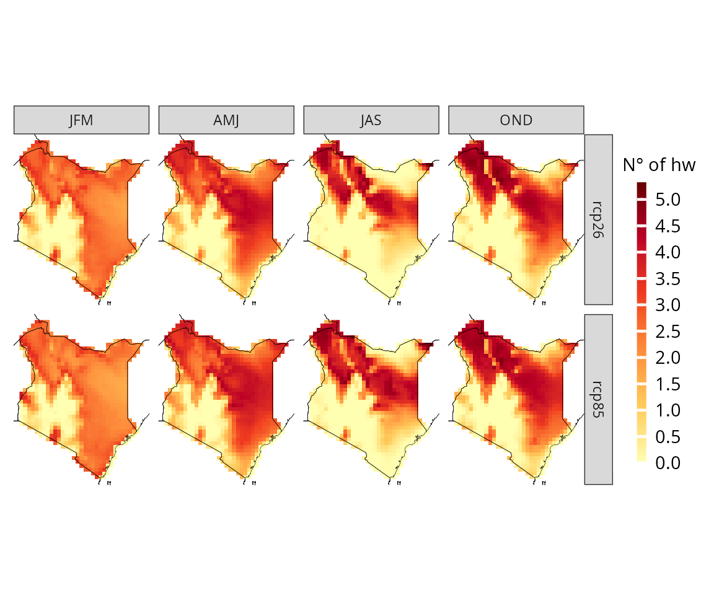

Seasonal plots and climate indexes
more_advanced.RmdIn the getting started article, we have already explored some of the fundamental features of CAVAanalytics. Now, let’s take our understanding to the next level as we delve into the full potential of CAVAanalytics.
# to download a specific area, set country=NULL and specify xlim and ylim arguments.
kenya_exmp <- load_data(path.to.data = "CORDEX-CORE", country = "Kenya", variable = "tasmax", years.proj = 2030:2060, years.hist = NULL, domain = "AFR-22")Seasonal plot
Creating plots for multiple seasons is very easy with CAVAanalytics. Simply specify season=list(1:3, 4:6), for example.
projections(kenya_exmp, season = list(1:3, 4:6, 7:9,10:12)) %>%
plotting(., plot_titles = "mean tasmax °C", ensemble = T)
Climate indicators
How CAVAanalytics works
CAVAanalytics offers users great flexibility in calculating climate indicators. To fully understand this functionality, let’s consider a simple vector of Tmax (maximum temperature) values over a given period.
As observed, there are two periods during which the Tmax exceeded 35 degrees for at least two consecutive days. CAVAanalytics allows users to explore several pieces of information in such scenarios. Below is a list highlighting the types of operations that can be performed using CAVAanalytics.
tmax <- c(20, 36, 24, 25, 32, 36, 37, 38, 12, 13, 37, 38, 40, 42)
# How many days have Tmax values higher than 35 degrees?
CAVAanalytics::thrs(tmax, uppert=35, lowert=NULL)
#> [1] 8
# What is the maximum duration of a heatwave, defined as consecutive days with Tmax above 35 degrees?
CAVAanalytics::thrs_consec(tmax, uppert=35, lowert=NULL, duration="max", frequency=FALSE)
#> [1] 4
# What is the total number of days with at least two consecutive days having Tmax higher than 35 degrees?
CAVAanalytics::thrs_consec(tmax, uppert=35, lowert=NULL, duration=2, frequency=FALSE)
#> [1] 7
# How many heatwaves are there, defined as periods with Tmax exceeding 35 degrees for at least two consecutive days?
CAVAanalytics::thrs_consec(tmax, uppert=35, lowert=NULL, duration=2, frequency=TRUE)
#> [1] 2Real examples
What if we want to calculate the projected total duration of heat waves that last for at least 3 consecutive days with a maximum temperature above 35 degrees? This can be achieved by setting the threshold (uppert) and specifying consecutive = TRUE and duration = 3. If you have any questions about the functionality of each argument, remember to consult the help documentation by typing ?projections.
projections(kenya_exmp, season = list(1:3,4:6,7:9, 10:12), consecutive=T, duration=3, uppert=35) %>%
plotting(., plot_titles = "N.days", ensemble = T, palette=IPCC_palette(type = "tmp", divergent = F))What if we also wish to determine the projected maximum length of a heat wave, defined by a consecutive number of days with a maximum temperature above 35 degrees? This can be achieved by setting the threshold (uppert) and specifying consecutive = TRUE and duration = “max”
projections(kenya_exmp, season = list(1:3,4:6,7:9, 10:12), consecutive=T, duration="max", uppert=35) %>%
plotting(., plot_titles = "N° days", ensemble = T, palette = IPCC_palette(type = "tmp", divergent = F))We could also investigate the projected frequency of heat waves, each defined as a period with Tmax exceeding 35 degrees for at least three consecutive days.
hwvs=projections(kenya_exmp, season = list(1:3,4:6,7:9,10:12), consecutive=T, duration=3, uppert=35, frequency=T)
plotting(hwvs, plot_titles = "N° of hw", ensemble = T, IPCC_palette(type = "tmp", divergent = F))